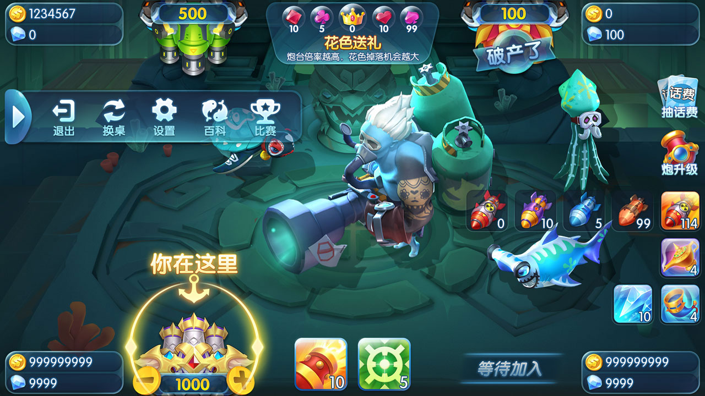

鱼类参数
FishSpec 包含鱼 ID、名称、倍率和捕获概率。
打鱼玩法以鱼群目标、炮台射击和奖励结算为核心，并通过 Boss、特殊场景和活动模式扩展节奏。

打鱼游戏源码专题：动态鱼群、炮台射击、Boss战、海魔来袭、玉石场、奖励结算与真实战斗截图。
FishSpec 包含鱼 ID、名称、倍率和捕获概率。
真实截图展示海魔来袭等大型目标和活动场景。
配置和截图覆盖玉石场、深海场景及刺激区方向。
下列图片来自仓库现有资源，不是示意图。


| Lua 客户端 | client/ 下的 UI、协议、登录和好友模块 |
|---|---|
| C++ 捕鱼引擎 | FishingEngine、Room、CMake 与单元测试 |
| Python 房间 API | FastAPI 房间列表、加入流程与健康检查 |
| Node 运营 API | Express、Helmet、Zod 和模式目录 |
| MySQL 与配置 | schema.sql、开发种子和 fishing-modes.yaml |
生产能力、素材权利和概率配置必须根据当前代码、许可证与独立测试核对。